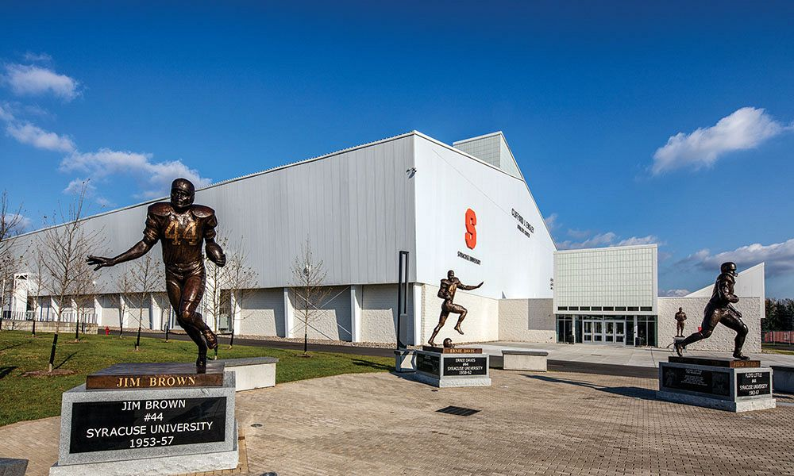
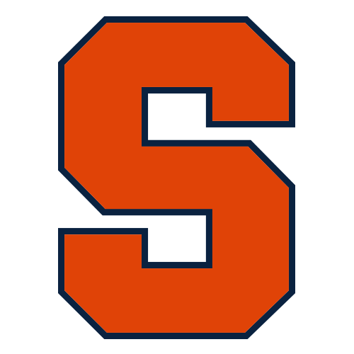
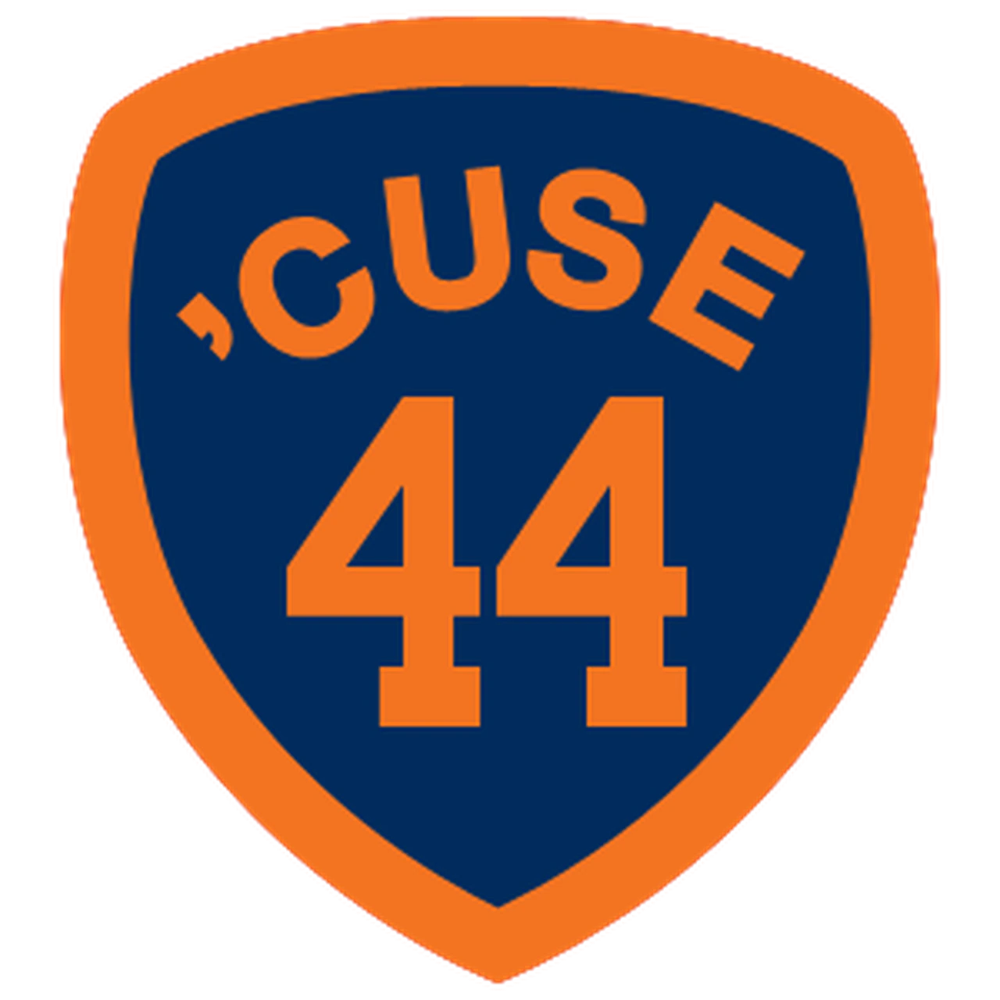
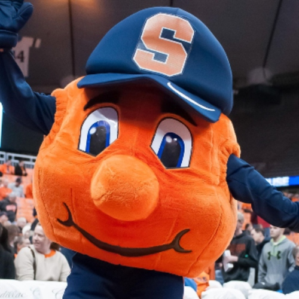

Syracuse University Football History
In general, Syracuse has a rich history with all-stars such as Jim Brown, Ernie Davis, and Floyd Little. Jim Brown played as a running back for SU. In his senior year in 1956, Brown set school records for highest season rush average (6.2) and most rushing touchdowns in a single game (6). He ran for 986 yards, being the third-most in the country despite Syracuse playing only eight games—and scored 14 touchdowns. Ernie Davis was the first black man to ever earn the Heisman Trophy. Davis also played as a running back for the Syracuse Orange. He ran for 823 rushing yards and scored 15 touchdowns while leading the Orangemen in receiving with 16 catches for 157 yards and breaking multiple records once held by Jim Brown. He led Syracuse University to its sole national title in 1959, scoring two touchdowns as a sophomore against Texas in the Cotton Bowl. He was the number 1 overall pick in th 1962 NFL Draft, but was not able to play pro football, as he was diagnosed with leukemia. He died on May 18th, 1963. Finally, Floyd Little is the last Syracuse player to have worn the sacred number 44. Little was an All-American, was in the College Football Hall of Fame and the Pro Football Hall of Fame. He was also a running back for the Syracuse Orange. He went on to play for the Broncos, being the sixth player selected overall in the 1967 NFL draft pick.

Syracuse football was great in the 90's. When Paul Pasqualoni became coach, the team went on to have a hot streak. Donavan McNabb was the quarterback and Marvin Harrison was the star receiver. They both went on to do well in the NFL. Back then the Syracuse Orange were in the Big East conference, not the ACC. During this time, SU had 15 winning seasons in a row, ending in 2001. Biggest rivals then were Miami and Boston College. Now they are all in the ACC together and the rivalry doesn't feel the same.
More recently, Syracuse's biggest rivals are Clemson, Notre Dame, and Duke. However, most of these rivals are one sided on SU's side. The last few years have been mediocre at best, and terrible at worst. Syracuse has only been to a bowl game a couple times in the last 10 years. I'm hopeful this season plays out well and they win 8 or 9 games, but that's a tall order.
Syracuse University Traditions History
1 / 3

The color Orange
Syracuse's offical color became Orange in 1890. This made Syracuse the first university to adopt only one official color. Before the change to orange, the school colors were a light pink and pea green. Syracuse students wanted colors as bold as they were. Orange alone was not claimed by any other school, and thus, was Syracuse's for the taking. It was adopted unanimously by a student committee, faculty, the Alumni Association, and Trustees, and remains Syracuse University's official color to this day.
2 / 3

The 44 legend
The number 44 is one of the most famous numbers associated with a college football program. Since 1954, eleven players have worn the number and three earned All-American honors. The three that earned All-American honors includes Jim Brown, Ernie Davis, and Floyd Little -- all who rank among the finest running backs ever to play the college game. In recognition of the number's significance, the University resides within the 13244 zip code, and all University phone numbers start with "44."
3 / 3

The Mascot
Syracuse University's beloved mascot Otto the Orange is a fixture at the school's sporting events and in the community. Otto wasn't always Syracuse University's mascot, but the beloved orange has been a favorite for more than 40 years. Cheerful and big-hearted, Otto always spreads sunshine and Syracuse spirit. From the sidelines at Syracuse University games to community events, roaming around campus during exam time, and even on dance floors at alumni weddings. Otto was even named the "Best Mascot in the ACC" by ESPN in 2016!
❮
❯